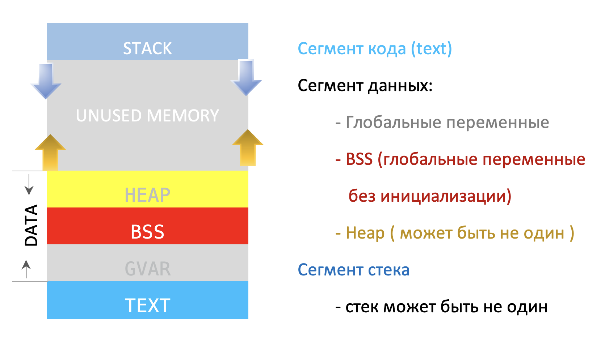
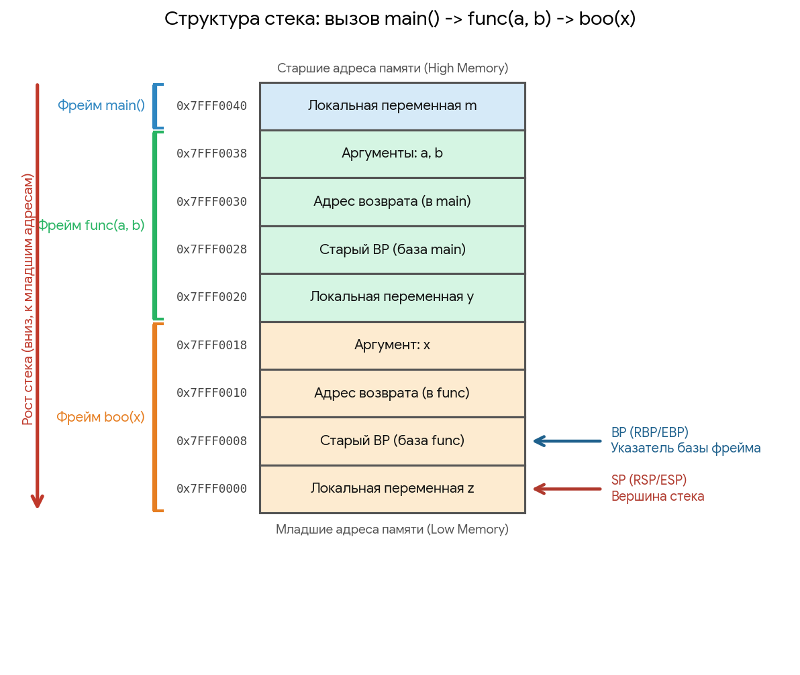

Курс: Основы программирования на C++
Продолжительность: 2 × 45 минут
Рассмотрим ситуацию, когда нам нужно записать результаты тестов 26 студентов и рассчитать средний балл по группе. Для этого нам потребуется 26 переменных. Мы можем определить их следующим образом:
int testScore1 {};
int testScore2 {};
int testScore3 {};
// ...
int testScore26 {};
Нужно определить очень много переменных! А чтобы рассчитать средний балл, нам нужно будет сделать что-то подобное:
int average { (testScore1 + testScore2 + testScore3 + testScore4 + testScore5
+ testScore6 + testScore7 + testScore8 + testScore9 + testScore10
+ testScore11 + testScore12 + testScore13 + testScore14 + testScore15
+ testScore16 + testScore17 + testScore18 + testScore19 + testScore20
+ testScore21 + testScore22 + testScore23 + testScore24 + testScore25
+ testScore26) / 26; };
Это не только требует много ввода текста, но и очень монотонно (и допустить опечатку в одном из чисел несложно, даже не заметив этого). А если мы захотим что-то сделать с каждым из этих значений (например, вывести их на экран), нам придётся заново вводить имена каждой из этих переменных.
Теперь предположим, что нам нужно изменить нашу программу, чтобы учесть еще одного студента, который только что был добавлен в группу. Нам придется просканировать весь код и вручную внести testScore27 необходимые изменения. Любое изменение существующего кода сопряжено с риском появления новых ошибок. Например, несложно забыть обновить делитель при вычислении среднего значения с 26 на 27!
И это всего лишь при наличии 26 переменных. Рассмотрим случай, когда у нас сотни или тысячи объектов. Когда нам нужно больше нескольких объектов одного типа, определение отдельных переменных просто не масштабируется.
Нужна структура, которая позволяет хранить много однотипных объектов. -> Массив
ТИП-элементов-массива ИМЯ-массива [РАЗМЕР-массива];
int testScore[26];
testScore
┌────┬────┬────┬ ┬───┬────┐
│ │ │ │ │ │
└────┴────┴────┴ ┴───┴────┘
0 1 2 24 25
Каждый элемент имеет свой индекс.
Индексация начинается с нуля.
Размер массива представляет собой const целочисленное значение типа, указывающее компилятору, сколько элементов находится в массиве.
Размер массива должн быть не менее 1. Компилятор выдаст ошибку, если длина массива равна нулю, отрицательному значению или нецелому числу.
int fibonnaci[6] = { 0, 1, 1, 2, 3, 5 };
int prime[5] { 2, 3, 5, 7, 11 };
int arr2[5] {}; // инициализация всех элементов массива значением 0
int a[4] { 1, 2, 3, 4, 5 }; // error компиляции: слишком много инициализаторов
int b[4] { 1, 2 }; // okey; b[2] and b[3] инициализированы значением 0
int bad[] {}; // error компиляции: компилятор определит это как массив нулевой длины, что недопустимо!
const int array[] { 2, 3, 5, 7, 11 };
std::cout << "Размер массива: " << sizeof(array) << " байт\n";
std::cout << "Массив содержит: " << sizeof(array) / sizeof(array[0]) << " элементов\n";
int arr[] { 1, 2, 3 };
arr[0] = 4;
arr = { 5, 6, 7 }; // error компиляции: Недопустимое присваивание массива
int array[]{10, 20, 30, 40, 50};
std::size_t n {sizeof(array) / sizeof(int)};
for (std::size_t i{0}; i < n; ++i){
std::cout << array[i] << '\n';
}
std::size_t— стандартный беззнаковый целочисленный тип, который обычно используют для размеров и индексов.
Современный C++ позволяет писать проще:
int array[]{10, 20, 30, 40};
for (int element : array){
std::cout << element << '\n';
}
Для каждого элемента(element) массива взять его значение в
array.
int arr[]{1, 2, 3, 4};
for (int& element : arr){
element *= 2;
}
в массиве теперь:
2 4 6 8
без ссылки:
element был бы копией элемента.
const при перебореЕсли массив менять не нужно:
for (const int& element : arr){
std::cout << element << '\n';
}
int
↓
копия
const int&
↓
ссылка без изменения
int massiv[5];
Допустимые индексы:
0 1 2 3 4
C++ не проверяет выход за пределы границ массива во время выполнения.
Можно написать:
massiv[5] = 100;
Это ошибка.
Причем компилятор не обязан остановить программу.
Происходит обращаение к памяти за пределами массива.
Это неопределенное поведение.
Программа может:
Можно написать:
void printArray(int arr[], std::size_t size){
for (std::size_t i{0}; i < size; ++i){
std::cout << arr[i] << ' ';
}
}
int main(){
int array[]{10, 20, 30, 40};
printArray(array, sizeof(array)/sizeof(int));
return 0;
}
В параметрах функции массив фактически корректируется в тип указателя.
void printArray(int* arr, std::size_t size);
array
↓
доступ к нулевому элементу
size
↓
количество элементов
void doubleValues(int arr[], std::size_t size){
for (std::size_t i{0}; i < size; ++i){
arr[i] *= 2;
}
}
int main(){
int array[]{1, 2, 3, 4};
doubleValues(array, sizeof(array)/sizeof(int));
return 0;
}
После:
2 4 6 8
int array[]{10, 20, 30, 40};
Адрес нулевого элемента:
&array[0]
Имя массива в большинстве выражений преобразуется в указатель на первый элемент.
Поэтому: array в соответствующем контексте представляет адрес первого элемента.
Если сравнить:
array
и:
&array[0]
Оба выражения указывают на нулевой элемент массива.
Это принципиально.
Нельзя говорить:
«Массив — это указатель».
Правильнее:
В большинстве выражений имя встроенного массива преобразуется в указатель на его нулевой элемент.
Например:
int array[3];
и:
int* ptr;
— это разные типы.
Массив содержит свои элементы.
Указатель хранит адрес.
int arr[]{10, 20, 30};
int* ptr{arr};
std::cout << *ptr << '\n'; //10
Потому что:
arr
↓
адрес arr[0]
ptr
↓
тот же адрес
*ptr
↓
array[0]
int arr[]{10, 20, 30, 40};
int* ptr{arr};
std::cout << *ptr; // 10
++ptr;
std::cout << *ptr; // 20
++ptr; // указывает на 30
Арифметика указателей выполняется в единицах элементов указанного типа.
Существует два классических способа обхода массива через явный указатель:
const int n{4};
int array[]{10, 20, 30, 40};
int* ptr{array};
for (std::size_t i{0}; i < n; ++i){
std::cout << *(ptr + i) << '\n'; // array[i]
}
const int n{4};
int array[]{10, 20, 30, 40};
int* ptr{array};
for (std::size_t i{0}; i < n; ++i){
std::cout << *ptr << '\n';
++ptr; // Здесь указатель последовательно перемещается по массиву
}
int array[]{10, 20, 30, 40};
int* ptr{array};
std::cout << sizeof(array) << '\n'; // 16
std::cout << sizeof(ptr) << '\n'; // 4 или 8(зависит от архитектуры)
Конкретные размеры зависят от платформы и типов.
const и указателиПозиция ключевого слова const в объявлении указателя кардинально меняет правила константности для адреса и самих данных.
const int* ptr; // указатель на const int
*ptr = 10; // error: через него нельзя изменить int:
Но сам указатель можно переназначить:
ptr = &other;
int value{};
int* const ptr{&value}; // Здесь сам указатель const
*ptr = 10; // okay
int other{};
ptr = &other; // error
Сводная таблица комбинаций модификатора const:
| Синтаксис объявления | Можно менять сам адрес (ptr)? | Можно менять значение по адресу (*ptr)? |
|---|---|---|
int* ptr |
Да | Да |
const int* ptr |
Да | Нет |
int* const ptr |
Нет | Да |
const int* const ptr |
Нет | Нет |

Очень кратко и обобщённо, что означают эти термины:
.text (Код программы) — область памяти, где хранится сам скомпилированный машинный код программы (инструкции для процессора). Обычно эта область доступна только для чтения, что защищает программу от случайного самомодифицирования.
.gvar (Инициализированные данные) — сегмент ОЗУ, куда помещаются глобальные и статические переменные, которые были инициализированны разработчиком при объявлении ненулевым значением (например, int kVar{5};).
.bss (Неинициализированные данные) — сегмент ОЗУ для глобальных и статических переменных, которые либо не были инициализированы явно (int var;), либо были инициализированы нулём (int var{0};). При запуске программы операционная система автоматически заполняет весь этот сегмент нулями.
Куча (Heap) — область ОЗУ, используемая для динамического выделения памяти в процессе работы программы. Именно здесь резервируется место, когда в C++ вызывается оператор new (или функции malloc/calloc в стиле C). Управление памятью на куче полностью лежит на разработчике.
Стек (Stack) — область памяти в ОЗУ, предназначенная для автоматического управления контекстом функций и обработки прерываний.
Стек — область памяти в ОЗУ, куда сохраняется адрес программы в момент возникновения прерывания или перехода в другую функцию.
чуть подробнее
Пошагово выглядит это так:
IP instruction pointer «бежит» последовательно по адресам инструкций для процессора).При переходе из одной функции в другую, например из int main() в void func().
Технически, стек можно представить в виде стопки книг, где нельзя взять вторую сверху книгу не сняв предварительно первую. То есть стек работает по принципу LIFO буфера (Last In First Out) — «последним пришёл, первым вышел». Такая организация очень хорошо себя оправдывает. Представьте себе такую ситуацию:
Указатель перепрыгнул из функции main() в func().
В стек записался адрес того места откуда выпрыгнул указатель.
Идёт обработка функции func() и в этот момент происходит вызов функции boo().
В стек записывается (ложится поверх предыдущего) ещё один адрес, и указатель переходит в функцию boo().
В результате на стеке лежат два адреса — адрес, на котором была приостановлена функция main(), а поверх него адрес на котором приостановлена функция func().
По окончании работы функции boo() система берёт из стека, «снимает со стопки» самый последний адрес, переходит по нему и заканчивает выполнение функции func() с того места, где она была прервана. Больше этот адрес не нужен и он выкидывается, на стеке остаётся адрес приостановки функции main(). Как только функция func() завершается, система опять заглядывает в стек и «снимает» адрес приостановки функции main(). Адрес опять же летит в помойку, а функция main() продолжает выполняться. Таким образом, снимая «книжку за книжкой» система не сможет вернуться куда-то не туда и нарушить целостность программы.
Помимо адресов, в стек сохраняются локальные переменные функций и параметры, передающиеся в функции. То есть в момент вызова функции, вместе с адресом для возврата, на стек кладутся ещё и локальные переменные, которые есть в этой функции. Как только функция отработает, эти переменные будут сняты со стека и уничтожены.
Стек начинается от самого большого адреса и при увеличении размера ползёт вниз (записывая данные в меньшие адреса), а куча наоборот, при увеличении размера ползёт вверх, поэтому при выделении памяти на куче нужно следить, чтоб эти области не налезли друг на друга.

В современных ОС с виртуальной памятью стек (вверху адресного пространства) и куча (внизу) разделены огромным пустым пространством. Чтобы они не налезли друг на друга:
• Между ними ставится специальная защитная неразмеченная страница памяти (Guard Page).
• Если стек разрастётся слишком сильно (например, при бесконечной рекурсии) и упрётся в эту границу, процессор вызовет аппаратное исключение, и ОС аварийно завершит программу с ошибкой Stack Overflow (переполнение стека).